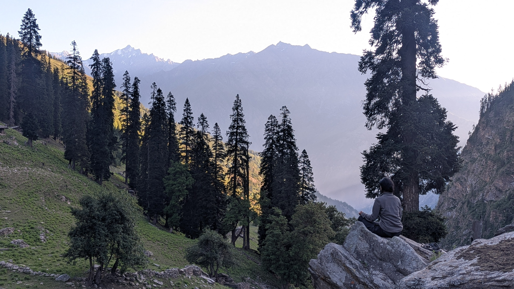
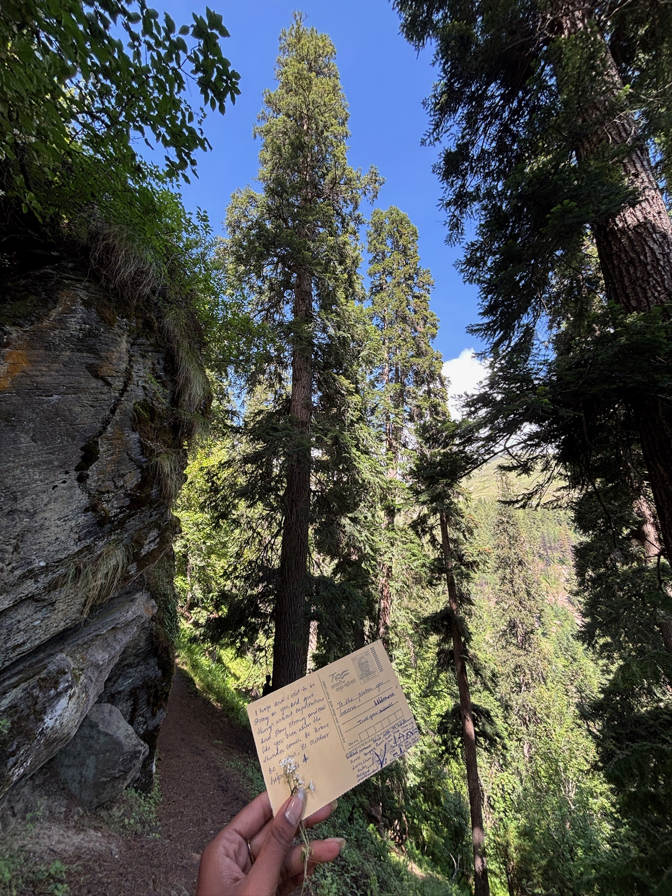
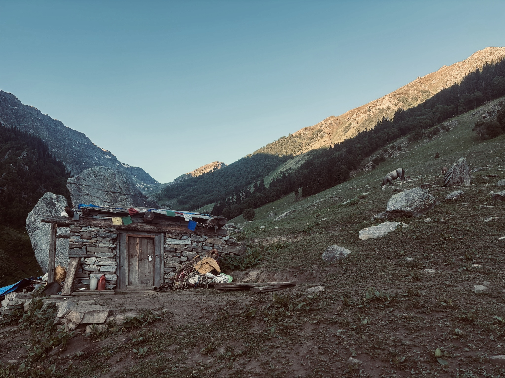
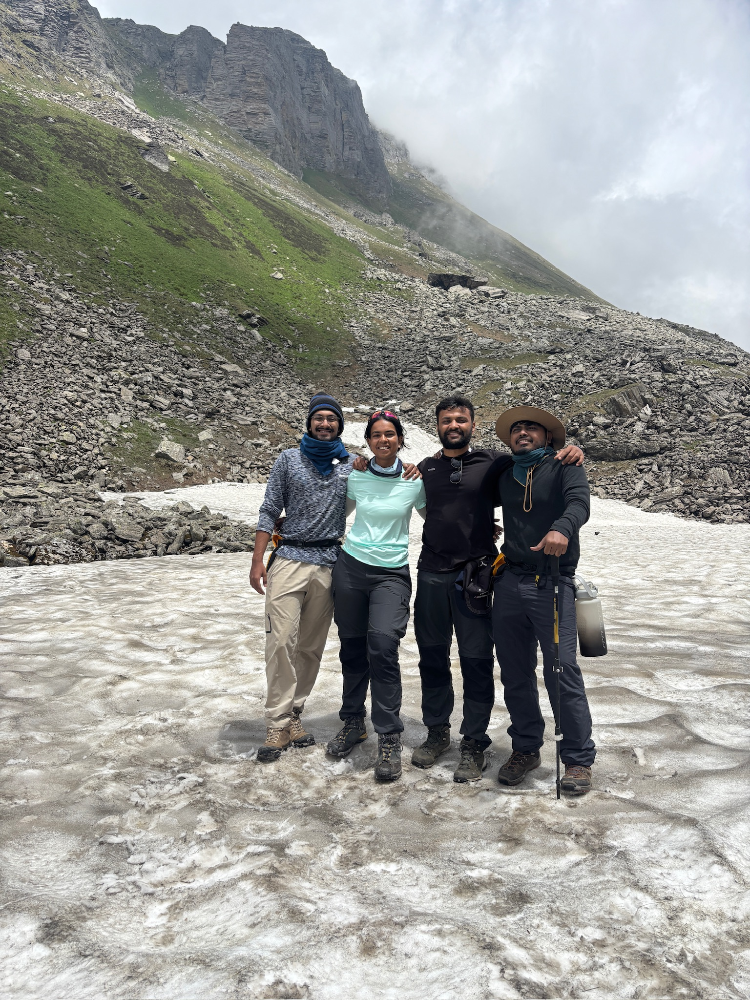
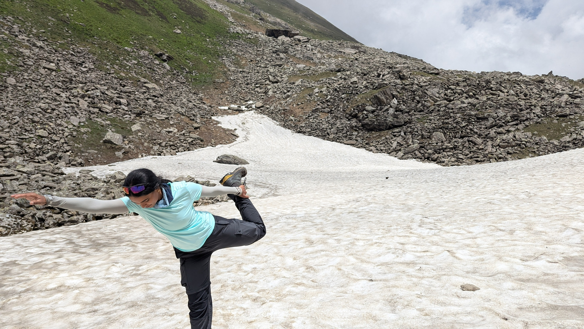
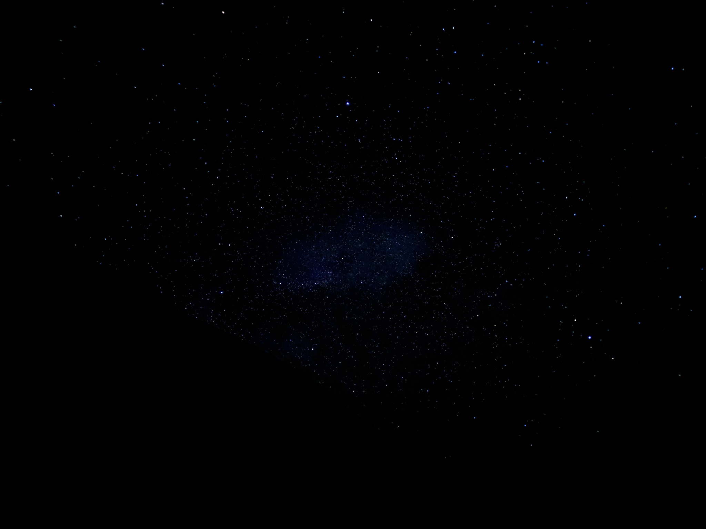

We don't just call them the Himalayas… we call them the Mighty Himalayas for a reason. They don't need to shout — they call you. Quietly. Deeply. And when your heart is in the right place, with the purest of intentions, things just… come together. That's how it happened for me. No plans, no overthinking. Just a pull I couldn't ignore.
My journey began long before I stepped into the mountains. It started with 5 km every day — a test of discipline, not just fitness. But nothing truly prepares you for what's to come.
When I finally reached Himachal, even the bumpy roads, the bone-chilling breeze, and the river flowing beside me felt like a blessing.


We walked through wild paths, across crazy ascents, tiny flowers blooming at our feet, and grasslands scattered with boulders. Streams gushed by our side. And somehow, through the hardship, laughter, and silence… we became a family.
Every campsite felt earned. When we reached our first campsite, Dayara — meadows filled with flowers — every trail looked like it was pulled straight out of a Windows wallpaper. Surreal. There were cows, goats, horses, and a dog that followed us everywhere.
I felt like the main character in a story — no network, no distractions. Just me, nature, and the peace of true solitude.
The Sacred River.
The Shift I Didn't Expect.
Then came DIY day. A day where we did everything — cooked, cleaned, navigated using maps, read contour lines, and answered questions like: "Still how far?", "When's the next break?", "Can I rest now?" It was real, raw, and deeply humbling.
We pushed through rocks and heat and finally reached Litham — our second campsite. There, I sat beside the sacred Chandranahan river and meditated. When I opened my eyes to see the snow-capped peaks, I felt something shift. A kind of happiness that can't be explained. Only felt.
No complaints. No demands. Just a peaceful, symbiotic rhythm with nature.

Then came the Chandranahan Lake — a one-day, 2,000 ft ascent and descent. Tough, yes. But the beauty? Unmatched. The lake, glowing in the sun, fed by glacial melt… and a pawed companion walking loyally beside me. It was cinematic.
Nights were magical. We'd lie under the stars, learning about constellations, silent… until that moment — my first shooting star. I'll never forget that. 💫



Acclimatization at 13,000 ft followed, at a place called Dhunda — which literally means "foggy." And believe me, you couldn't see a soul standing in front of you. That fog swallowed everything. Every tent, every voice, every footstep — absorbed into silence.
It should have been unsettling. Instead, it was the most at peace I had ever felt. Sitting in that cloud, knowing tomorrow was the big one.